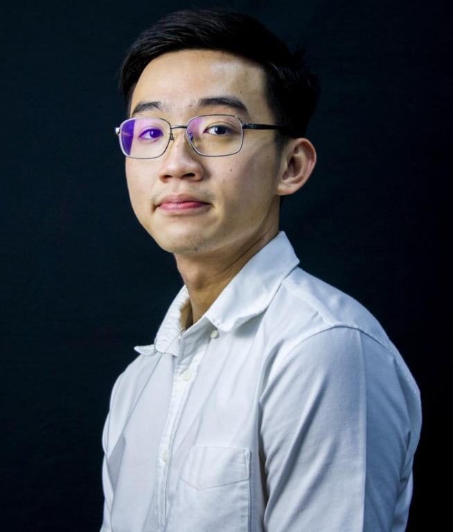

Francis Lim Shi Hao

Year 3 Undergraduate at the National University of Singapore
Objective
- To become proficient in Web Development and related programming languages like HTML, CSS and Javascript.
- To develop a working proficiency in French and Japanese.
- To meet and interact with people of different walks of life.
Education
National University of Singapore - 2021 to 2025 (expected)
- Bachelor of Social Sciences (Psychology), Minor in French and Japanese Languages
Hwa Chong Institution - 2017 to 2018
St. Joseph's Institution - 2013 to 2016
Pei Hwa Presbyterian Primary School - 2007 to 2012
Work Experience
Freelance Swimming and Academic Coach - Jan 2021 to PRESENT
- Organised and carried out swimming classes for various age groups.
- Highlighted value-oriented learning when teaching to ensure students (children) develop good learning habits.
- Developed a high level of swimming competency in adults and children.
- Conducted personalized academic tuition for primary school students.
Food Blog (@franswithfood) - Dec 2019 to Present
- Running a food-based Instagram account in my free time, learning photo taking as well as some editing methods.
- Previously dabbled in website making and related aspects such as SEO and copywriting.
Chef and Service Crew - Jan 2021 to Jul 2023
- Worked part-time at various restaurants such as Hathaway, Sakuraya and Simply Retro by Tinbox while studying.
- Worked in a fast-paced bar environment, developing soft skills such as communication with teammates and customers alike.
- Pursued culinary excellence in mise en place and execution of dishes.
- Learned the ropes of working in a fast paced, stressful kitchen environment well, developing attributes like diligence, efficiency and teamwork.
SPORTBALL Kindergarten Sports Teacher - Aug 2021 to Aug 2022
- Planned and carried out sports classes (eg. basketball) for Kindergarten children.
Skills
Languages
- English - Native Proficiency
- Mandarin Chinese - Full Working Proficiency
- Japanese - Limited Working Proficiency
- French - Elementary
CELTA by Cambridge
- Trained ESL (English as a Second Language) Teacher
About Me
Contact Me